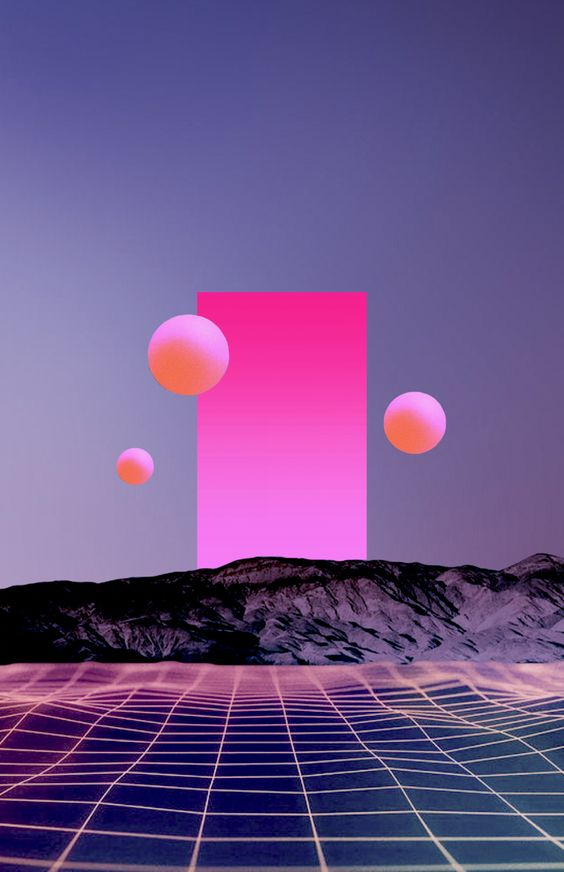

Todo entendimiento y toda verdad pueden ser vistos desde diferentes perspectivas. Por ejemplo, el Sol como la estrella del Sistema Planetario es la fuente de calor y luz de la cual se alimentan todos los planetas que le orbitan. Existe una atracción gravitacional entre cada planeta y el Sol, y este hecho hace que los planetas orbiten alrededor de la estrella principal. Recibimos luz del Sol que, en términos físicos, se trata de un fenómeno de onda electromagnética, un tipo de onda que no necesita de un medio físico para propagarse y por ello viajan a través del Espacio y llegan a destino. Esta es una perspectiva para analizar el fenómeno.
Desde una perspectiva informática, el Sol puede entenderse como un módem que retransmite datos desde soles más grandes y, en última instancia, desde el centro de la galaxia. Se forma así un tejido, una red interconectada cuyo fin es el movimiento de información.
Digamos que el Sol es un retransmisor de información que hace posible que la vida en los planetas suceda. Incluso hay muchas versiones alternativas a la oficial que indican al Sol como la Consciencia Crística, el Cristo.
“Yo soy la Luz del mundo” Juan 8:12
De paso, muchas culturas ancestrales adoraban al Sol como su Dios. Es que de no haber Sol (luz e información) no habría nada. Pero tampoco habría nada si no hubiera matriz para anclar esa luz. De aquí que se considera al Sol como Padre dativo y a la Tierra como Madre y matriz receptiva. De no haber matriz, la Luz pasaría de largo y no se anclaría; no habría plano de experimentación para que la consciencia tome forma humana y juegue.
Desde una perspectiva espiritual, el Sol es una consciencia muy elevada que sostiene su función de retransmitir información desde niveles superiores hacia los planetas que atiende. No puede levantarse un día y no iluminar, no podría ser Humano. El dato es que en los últimos años, se ha registrado un aumento en la ACTIVIDAD SOLAR: tormentas solares intensas, mayor emisión electromagnética, cargas iónicas elevadas que llegan a la Tierra. Ese sería la manifestación del cambio de ciclo: mayor cantidad de información ingresando a la Tierra a través de su estrella. Estamos siendo testigos de la llegada de mayor cantidad de información a la Tierra. Y claro, los desajustes a todos los niveles son inevitables. Desajustes físicos, tecnológicos, sociales, en todo orden. Estamos íntimamente conectados con la actividad solar.